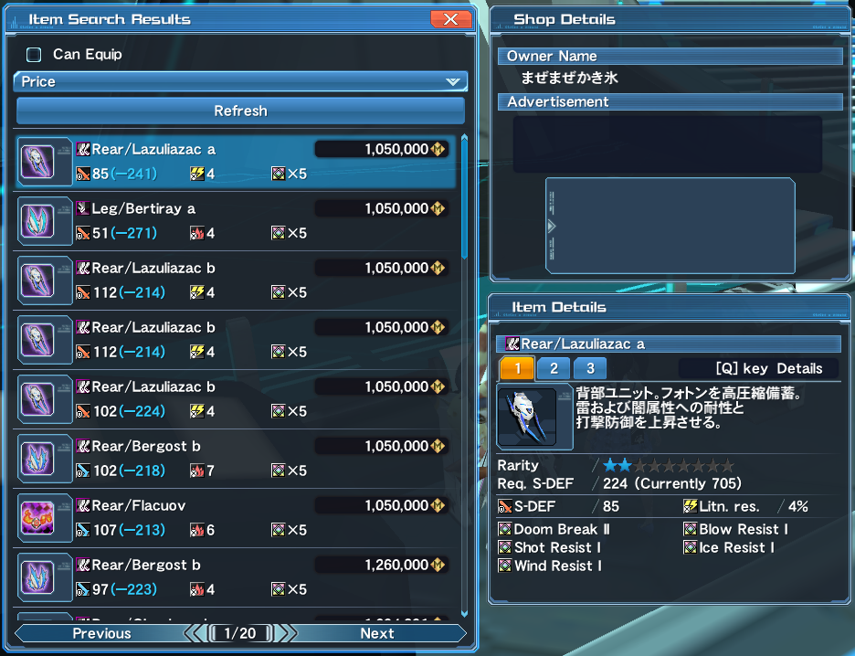

IV. Your Recipe
Just Monika.
Components
The components or the affixes that you would place on your equipment depends on a number of factors. The usual set of questions you should ask are:
- For what class are you affixing for?
- Is it for a weapon or a unit?
- What is your budget?
- Are you doing the affix during a boost?
- Do you have a stockpile of fodders or are you buying?
- Do you have Excubes and boosters?
Your affix would revolve depending on the answers to these questions.
Suppose I wanted an affix on units for Su/Fi for my T-ATK character. Summoner has a skill called Dear Master that lets the pet take the damage instead of the player if the attack would kill. In addition to this, Summoner is notoriously a PP hungry class. From this, I wouldn’t mind having a low HP or having defensive stat demerits while having a decent amount of T-ATK and PP:
- Magi The Soul
- Technique IV
- Doom Break II
- Persona Reverie
- Elegant Technique
Design
Design is not much for making art but on laying out the steps in making your final affix for your equipment. This is also where you would consider if you would rely on Dudu Boost Day or Affix Week and how much Excubes or boost items you are willing to spend to finish everything. This step is usually done in tandem with Market Check, which would be explained later on, but making an initial recipe is also fine before checking.
Going back to my wanted affixes, the initial recipe would be:
Checking through my storage, I would want to use these units for my T-ATK set:
Since they dropped as 5s already, the plan would be to continue with the direct slot affix showed in the initial recipe.
Market Check
A market check is where you check if you have all of the fodders available to finish your affix or if you have to buy them from the Player Shop. It is also the stage where you would possibly compromise your plan depending on the results.
Looking at the prices of 5 slot Doom Break II on units at the time that this was written:
If I were to follow my initial recipe, I would need 9 copies of Doom Break II just for a single unit and about 27 for the whole set; that amount of money would also require me partake in some shady dealings on a certain block and more just to get the money. Refining the recipe to isolate Doom Break II would result in about 9 copies of Doom Break II for the whole set.
Doom Break II gives +25 to All Atk / +3 PP; if I were to change Doom Break II, there are two affixes that come close to the stats that it gives: Flict Magia that gives +20 T-ATK / +3 PP and Sentence Technique that gives +20 T-ATK and +4 PP.
Flict Magia needs three copies of the affix for a transfer or one copy and an Extreceptor. However, checking up the price for Flict Magia at the time of writing shows an interesting result; while there are a few cheaper fodders to use for one unit, it quickly rises in price that will make finishing the whole set more expensive overall than when using Doom Break II.
On the other hand, Sentence Technique can only be transferred with the use of Sentence Receptor. Sentence Technique and Sentence Receptor can be traded from the Buster Medals Exchange Shop for 200 and 100 Buster Medals, respectively, or bought from the Player Shop.
You can farm the Buster Medals but for our example, we are only interested in minimal grinding and only in using Meseta as much as possible. So checking their prices on the Player Shop:
The combined price of Sentence Technique and Sentence Receptor amounts to roughly 5.7-6m Meseta per unit which is considerably larger than using Doom Break II.
Deciding on Doom Break II, now we decide whether to make the fodders or just buy them straight from the market; Doom Break II can be synthesized using 3, 4 or 5 pieces of Doom Break I with rates of 30%, 40%, or 50% respectively. Looking up at the prices of 5s Doom Break I, however, shows that it is more expensive making Doom Break II over buying them.
Moving on to the remaining fodders, I would make fodder 2 as the base instead since I wouldn’t want my base to risk of downslotting from a failed affix.
Preparing the base can be done using this recipe:
Some people are fine with taking chances, which is a viable path to take, but I wouldn’t want to take any chances for my base to downslot, so I would invest a little bit more money in it by changing fodder 2:
Fodder 2 can be made using 3 copies of Persona Reverie and 3 copies of Historia Soul; while Persona Reverie is relatively cheap, Historia Soul can be a bit costly.
Making the fodder would cost roughly 1.3-1.4m Meseta, not counting the price of an Ability Success Rate +30% and affixing costs. However, checking the prices of 5s Persona Reverie WITH Historia on them...
The cost of buying the unit is less than the cost of making it yourself. In relation to this, for my Leg unit, since it already has a Historia Soul in it, my recipe for that would be:

Moving to fodder 1, it can be done by:
Again, some people are fine with taking chances and this fodder is relatively cheaper than the rest of the fodders in the recipe so spamming it until it succeeds is not that much of a bad choice. On the other hand, we can further minimize the chance of failing by adding an extra copy of Mutation II:
Of course, fodder 1 requires more preparation and more resources which brings us to another recipe to consider: since Persona Reverie tends to drop often with Stat II Affixes and Mutation II can boost the synthesis of Stat II to Stat III, we can use a premade Persona Reverie / Technique II instead.
On the last fodder of the recipe, fodder 2, it can be done via:
I could improve the rates of the affixes, but this time, I will choose to roll the dice and chance the making of this fodder.
Checking up the prices of Shrayda Soul it shows that it is moderately expensive and can be painful if I were to spam the affixing process until it succeeds.
Shrayda Soul is in the recipe since it is a component for the Synthesis of X the Soul: a “Free Field Boss Soul” and Historia Soul; it also boosts the transfer of Technique III. So if I were to replace Shrayda Soul with another Soul, I would need a cheap “Free Field Boss Soul” and something that can boost the transfer of Technique III. Searching through various “Free Field Boss Soul”, Vol Soul appears to be a good replacement Shrayda Soul, price-wise:
While Vol Soul boosts the transfer of Power instead of Technique, Persona Reverie also tends to drop with Dark Falz Souls, including Loser Soul which boosts the transfer of Technique; with that in mind we can have the recipe as:
With every fodder prepared, Elegant Technique can just be bought through the Player Shop.
After obtaining everything, we can now proceed to do the final affixing of the set.
Market check needs the player to know what Quests are in season to know which affixes are abundant. Of course it is difficult to monitor every Quest drops and drop rates of affixes, so asking someone for a second opinion on your plans is helpful.